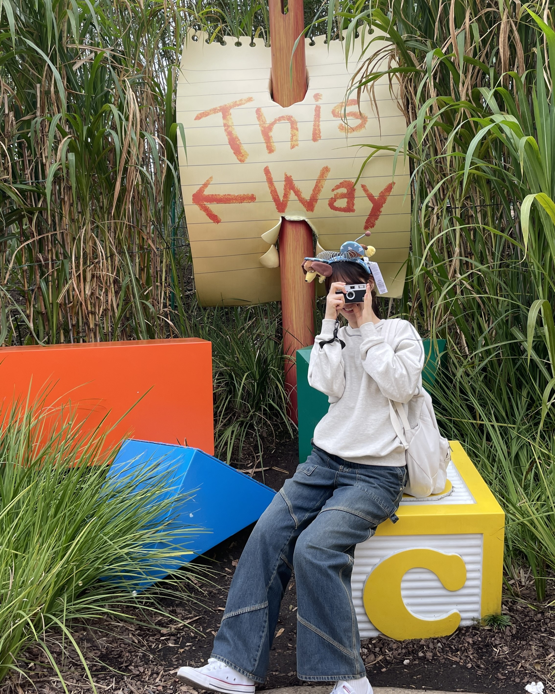

안녕하세요 최성희의 홈페이지에 오신 것을 환영합니다 :)

Let's be a person who always challenges!
안녕하세요! 제 이름은 최성희입니다. 제 홈페이지에 오신 것을 환영합니다.
저는 군산대학교에서 컴퓨터정보공학을 전공하고 있습니다.
C언어와 C++, Java언어를 배웠고 제가 배운 언어를 바탕으로 자료구조를 통해
알고리즘을 구현할 수 있습니다. 또한 현재 배우고 있는 HTML과 CSS,
Javascript를 통해 간단한 웹 페이지를 구현할 수 있습니다.
그리고 현재 해커톤, 경진대회 등 다양한 활동을 도전하고 있습니다.
제 인생의 좌우명처럼 항상 도전하는 사람이 되겠습니다!